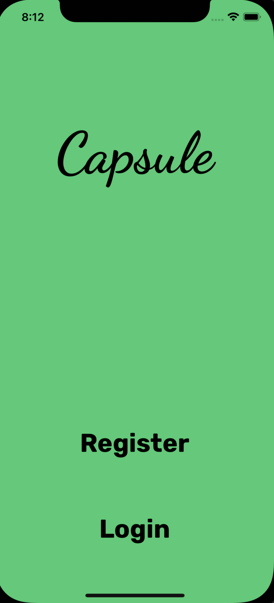
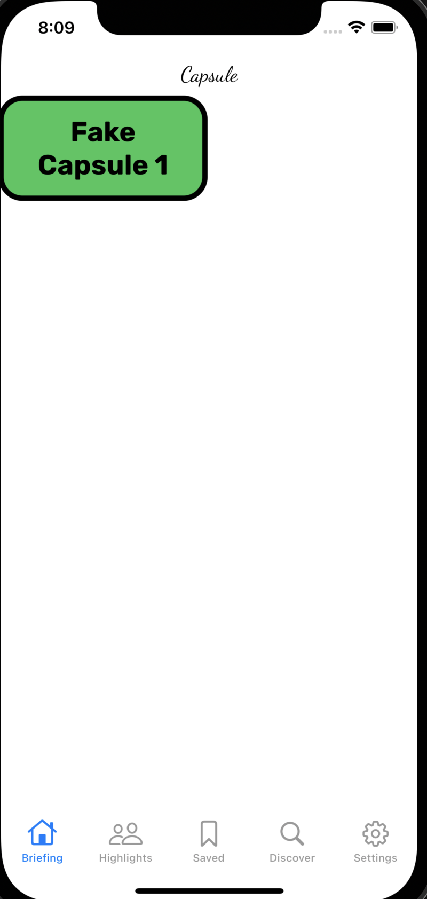

Capsule was my first major iOS native project, started after taking a Udemy course to learn iOS development during an extended winter break. I was looking for a discipline of software engineering that would give me a chance to look at the results of the code I was writing in a more tangible form than command line output, and I realized that iOS development would produce the sort of "software" out of the gate that I was looking for. It wasn't originally my idea, though; another student at Notre Dame came up with a business plan for a faith-based social media app, and he brought me on to develop the minimum viable product in app form.
The product turned out to take much more than just an app. A realistic MVP required at least a bare-bones backend and a way for content creators to upload videos. To rectify this, I designed the architecture for the system, using Google Cloud Platform to support NoSQL data, file storage, and other cloud computing operations. We also brought on another team member to help build out a React.js Web app component which I had started earlier. Capsule remains a work in progress (what software doesn't?), but I'm incredibly proud of what we've accomplished to this point, especially given how little we knew coming in.
